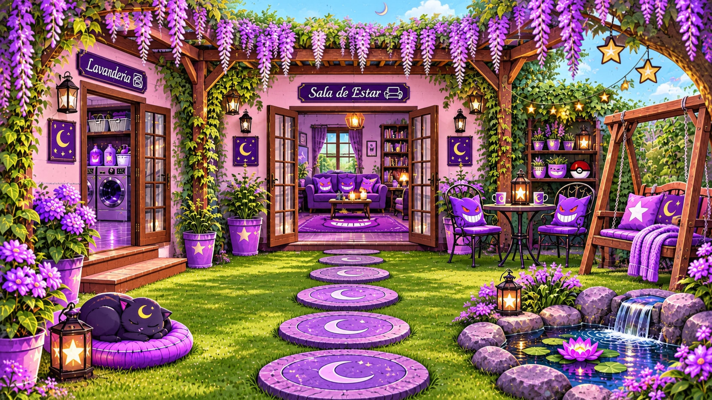

🌹 🎀 🌱 🎀 🌹
Mi Patio Jardín
✧ El hogar mágico de Lulú ✧
🌹
🎀 ✦ 🎀
🌹

🌱 No se pudo cargar el fondo del patio.
Revisa los archivos en assets/patio.
🌹 ✧ 🌱 ✧ 🌹
☾ ✦ ✧ ✦ ☾
🫘
🪴
Semillita mágica
Lulú está comenzando su aventura.
✧ 🌱 ✧
🌸 Cuidar a Lulú
Cada cuidado aporta experiencia.
Lulú nunca pierde niveles ni muere.